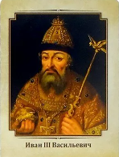

Владимир Святославич

Иван III Васильевич, также известный как Иван Грозный, был великим князем Московским с 1462 по 1505 год. Он собрал большую часть русских земель и начал процесс объединения Руси вокруг Московии, что впоследствии привело к созданию Российской империи. Иван III также освободил Московское княжество из-под влияния Золотой Орды, закрепив его независимость, и провел ряд реформ и реструктуризаций, которые укрепили Московское государство.